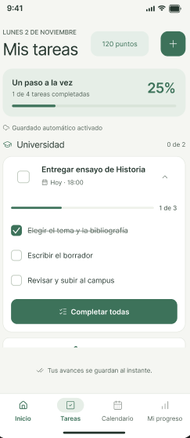
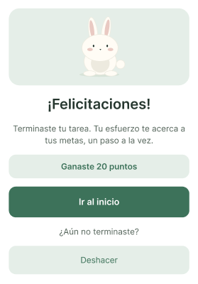

Investigación
Para entender por qué las personas postergan sus tareas y qué las ayuda a retomarlas, realizamos 5 entrevistas y recibimos 62 respuestas mediante un formulario. El producto está dirigido a estudiantes que también trabajan.
Hallazgos del formulario
| Hallazgo | Respuestas |
|---|---|
| Postergan una tarea pendiente frecuentemente, casi siempre o siempre. | 41 de 62 |
| Les resulta moderadamente difícil, difícil o muy difícil empezar una tarea. | 40 de 62 |
| Identifican el cansancio o la poca energía como un factor de postergación. | 36 de 62 |
| Señalan que no saber por dónde empezar influye en que posterguen una tarea. | 34 de 62 |
| Identifican la facilidad para distraerse como un factor de postergación. | 33 de 62 |
| Frecuentemente, casi siempre o siempre hacen una tarea principalmente porque se acerca la fecha límite. | 46 de 62 |
| Sienten estrés o preocupación al posponer una tarea. | 43 de 62 |
| Son bastante o completamente conscientes de que están evitando la tarea. | 41 de 62 |
Qué aportaron las entrevistas
Las cinco entrevistadas mencionaron distracciones mientras hacían tareas y describieron emociones negativas relacionadas con la postergación o con la cercanía de la fecha límite. Las cinco también mencionaron el interés, el gusto o la dificultad de una tarea al explicar cuándo la postergan. Algunas relataron que empezaban o retomaban sus pendientes cuando quedaba poco tiempo.
Mapa de empatía
- Dice
- «Siempre hago un listado de lo que debo hacer, y lo empiezo de acuerdo a su prioridad.»
- «Utilizar el celular me distrae múltiples veces mientras realizo mis tareas en general.»
- Piensa
- Evalúa el interés, la dificultad y el plazo antes de decidir cuándo empezar. Sabe que posponer puede dejarla con poco tiempo.
- Hace
- Organiza sus pendientes por prioridad. A veces interrumpe lo que está haciendo para usar el celular o hacer otra actividad y retoma la tarea cuando se acerca la entrega.
- Siente
- Siente estrés cuando se acumulan tareas, frustración cuando no entiende una consigna y presión cuando queda poco tiempo para entregar.
Qué decisiones tomamos a partir de los hallazgos
- Mostrar un primer paso claro. Como 34 de 62 personas señalaron que no saber por dónde empezar influye en la postergación, incorporamos subtareas visibles para dividir un pendiente en pasos más pequeños.
- Facilitar que la persona retome una tarea. Las distracciones aparecieron tanto en el formulario como en las entrevistas. Por eso mostramos qué pasos ya se completaron y guardamos el avance automáticamente al marcarlos.
- Hacer visible el plazo. Como 46 de 62 personas indicaron que la cercanía de la entrega suele impulsarlas a actuar, mostramos la fecha límite en la lista y dejamos la opción de configurar un recordatorio.
Definición del problema
Persona de referencia y punto de vista
Una persona que estudia y trabaja necesita saber qué tiene pendiente y cuál es el siguiente paso, porque entre ambos compromisos se le acumulan entregas y le cuesta retomar tareas empezadas.
¿Cómo podríamos ayudarle a retomar una tarea rápido?
Como estudiante que también trabaja, quiero organizar mis pendientes por grupo y ver el avance de cada tarea, para decidir qué hacer en el tiempo que tengo disponible.
| Evidencia | Requisito |
|---|---|
| La inspección detectó dificultad para reconocer a qué ámbito pertenecen los pendientes. | Mostrar grupos como Universidad y Trabajo, con fecha límite y recordatorio. |
| Completar subtareas obligaba a cambiar repetidamente de pantalla. | Desplegar subtareas en la lista y guardar los cambios al marcarlas. |
| Marcar una tarea por error podía acreditar puntos por equivocación. | Confirmar el avance y ofrecer «Deshacer». |
Pendiente de incorporar la ficha de persona, las historias originales y el mapa de viaje si el equipo lo elaboró.
Ideación
Las decisiones que se pueden rastrear en el rediseño fueron dar acceso directo a «+ Nueva tarea», mostrar las subtareas en la lista y mantener la personalización de la mascota como un recorrido propio. El acceso directo y el despliegue reducen los pasos para las acciones frecuentes.
Pendiente de agregar las fotos de lluvia de ideas y Crazy 8s y explicar qué alternativas consideró el equipo y por qué eligió la propuesta desarrollada.
Evolución del prototipo
Ver la exportación completa de los wireframes corregidos (PDF)
| Tarea | Del papel al wireframe corregido | Alta fidelidad |
|---|---|---|
| Crear una tarea | Acceso directo desde Inicio. El formulario reúne grupo, fecha, recordatorio y subtareas. | Capturas finales pendientes. |
| Completar una tarea | Subtareas desplegables, progreso visible y guardado automático. «Deshacer» permite revertir errores. | Comparación preliminar disponible abajo. |
| Personalizar la mascota | Vista previa del accesorio propio y confirmación para aplicarlo. | Capturas finales pendientes. |
| Comprar un accesorio | Búsqueda, estado sin resultados y confirmación del costo antes del descuento de puntos. | Capturas finales pendientes. |
Completar una tarea


Ver los tres pares de pantallas del recorrido (PDF)
Sistema de diseño propuesto
Inter con tamaños 24, 20, 16 y 14. Espaciado en múltiplos de 8. Botón primario relleno, secundario con borde y terciario de texto. Tarjetas, barra de progreso, casillas y navegación se reutilizan entre pantallas.
- Acción #4338CA
- Texto #172033
- Éxito #166534
- Error #B42318
Pendiente de añadir fotos del prototipo en papel, capturas finales y el enlace de presentación de Figma.
Evaluaciones realizadas
Recorrido cognitivo y evaluación heurística
Tres evaluadores revisaron los recorridos de creación, completado, personalización y compra. Estos problemas y severidades figuran en el informe de inspección.
| Problema | Severidad | Decisión |
|---|---|---|
| Demasiados pasos al completar | 3 | Desplegar subtareas en la misma lista. |
| Faltaban grupos, fechas y recordatorios | 3 | Agrupar pendientes y mostrar sus fechas. |
| Había una pantalla intermedia al crear | 2 | Abrir el formulario desde Inicio. |
| Había que confirmar el marcado | 2 | Guardar al marcar e incluir «Deshacer» al completar. |
| La búsqueda de accesorios era manual | 2 | Agregar búsqueda y un estado sin resultados. |
Consultar el informe de evaluación del prototipo en papel (PDF)
Prueba de usabilidad con wireframes
Pendiente de incorporar el informe de la prueba: perfiles anónimos, resultados por tarea, problemas con severidad y cambios hechos a partir de la observación.
Plan propuesto para la prueba final
Reclutar estudiantes que trabajen. Con consentimiento, pedirles que recorran cuatro escenarios sin indicar los controles. Por cada tarea, registrar si la completaron sin ayuda, tiempo, errores y comentarios. Al final, aplicar el SUS y priorizar los problemas por severidad para documentar las correcciones con un antes y un después.
- Preparar una exposición y registrar sus tres pasos. Éxito: la tarea aparece en Universidad con los tres pasos.
- Actualizar el ensayo que ya terminó. Éxito: aparecen las tres subtareas completas.
- Ponerle al conejo unos anteojos que ya tiene. Éxito: se guardan como aplicados.
- Comprar anteojos de sol con puntos. Éxito: la confirmación muestra un saldo de 300 puntos.